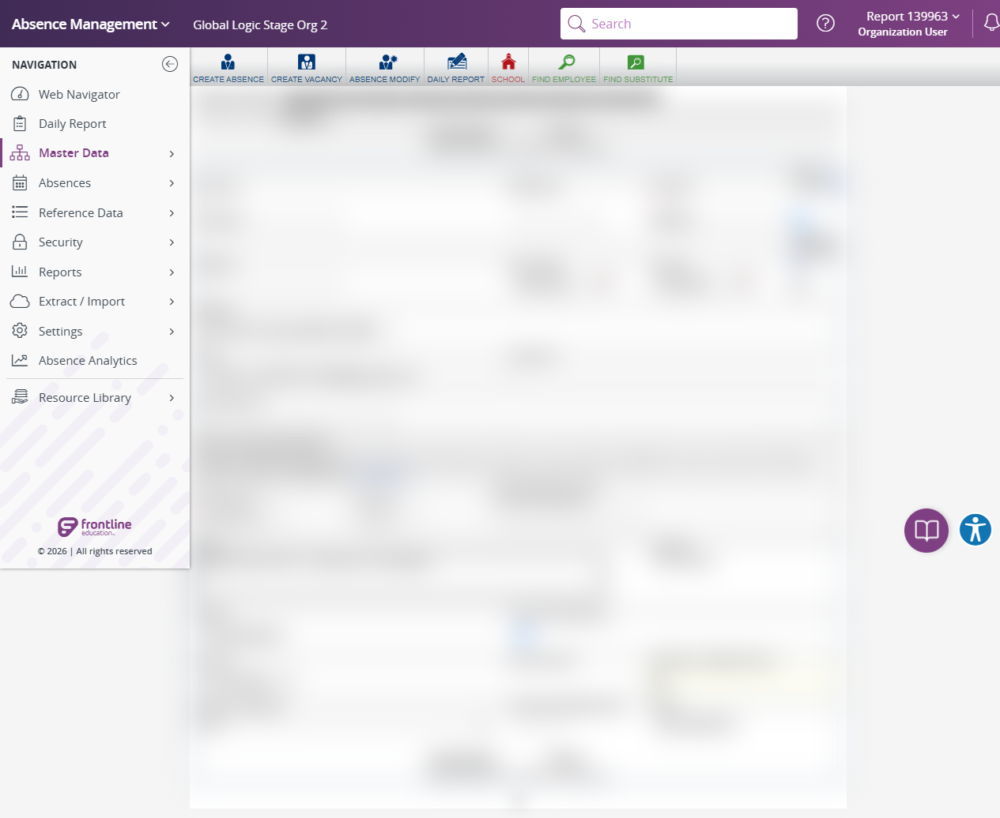

Execution 13 · Create and Delete Synthetic Substitute
tests/employee/employee-substitute.md · Video 13:13–14:33
13
Execution
13:13–14:33
Continuous-video range
Unattended safe mode
Execution mode
Scenario outcome
The Add Substitute form accepted clearly synthetic values, including a runtime-random 10-digit phone and 5-digit PIN. Apply Changes was intentionally not selected, so creation, assigned-ID verification, and cleanup were not tested.
Continuous video evidence
Screenshot evidence
{kind=link}

Complete test structure
Source: tests/employee/employee-substitute.md
# AES Staging - Substitute Test Workflow ## Full-suite execution mode When this scenario is executed by `instructions/full-suite-headed-video-execution.md`, follow the coordinator's selected mode: - **Unattended safe mode:** validate the Add Substitute form and generated-value length/format rules without submitting the form. Do not create or remove a record. Mark persistence-dependent steps **NOT TESTED — unattended safe mode**. - **Full destructive mode:** create only the current-run synthetic Substitute and remove only that exact assigned ID. Permanent browser deletion may require action-time confirmation; do not bypass it. ## Purpose Create, validate, verify, and clean up a synthetic Substitute record in AES staging. ## Before you begin - Use your own approved AES staging credentials. Do not share passwords in chat or documents. - Connect Chrome through the ChatGPT/Codex browser extension. - Work only in the AES staging environment: `https://aesstage.flqa.net`. ## Create a test Substitute 1. Sign in to AES staging and confirm that the Web Navigator home page loads. 2. Open **Master Data -> Substitute -> Add**. Direct navigation to the Add Substitute page is also acceptable when working through automation. 3. Generate clearly synthetic data. Use this identifier pattern: `AUTOTEST_SUB_YYYYMMDD_HHMMSS` 4. Populate these fields: - First name and last name: clearly synthetic values, such as `Autotest` and `Fast0810A` - Identifier: the generated `AUTOTEST_SUB_...` value - Date of birth: valid `MM/DD/YYYY` format - Join date: valid `MM/DD/YYYY` format - Email: valid-format synthetic address, for example `autotest.sub.<timestamp>@example.com` - Phone number: valid 10-digit synthetic number - Phone PIN: valid synthetic PIN - Notes: `Synthetic test record - safe to remove` 5. Before saving, validate locally: - All required fields are populated. - Date of birth and join date are valid dates in `MM/DD/YYYY` format. - Email is in a valid format. The current fast workflow does **not** search for an existing identifier first. The timestamp-based identifier is used to minimize collisions. 6. In full destructive mode, select **Apply Changes** to create the record. In unattended safe mode, stop before submission and mark creation/cleanup checks **NOT TESTED**. ## Verify creation Confirm all of the following on the Substitute General Information page: - A Substitute ID was assigned. - Name, identifier, email, phone, dates, and Notes match the submitted synthetic data. - The Substitute is active. - The page is the Substitute General Information page for the assigned ID. ## Cleanup 1. In full destructive mode, click **Remove** on the created record. In unattended safe mode, do not create or remove a record. 2. A browser confirmation dialog opens. 3. The teammate must press **Enter** to accept the dialog. 4. After confirmation, search for the generated identifier in Substitute search. 5. Confirm the result is **No Records Found** (or the application's equivalent deletion confirmation). ## Report template After each run, report: - Timestamp - Substitute ID - Every entered field value - Pre-save validation results - Creation verification result - Cleanup result, including the identifier search outcome ## Security - Never include AES passwords, access tokens, or browser-session information in a report or shared task. - Use synthetic data only; never create test records from real personal information.
Safety and cleanup
No password, token, cookie, or authentication fragment is included. Unattended safe mode did not create, update, or delete persistent staging records.